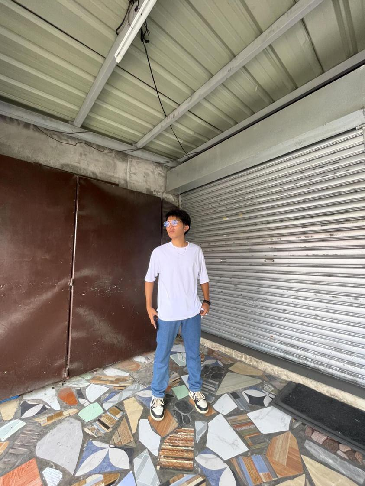
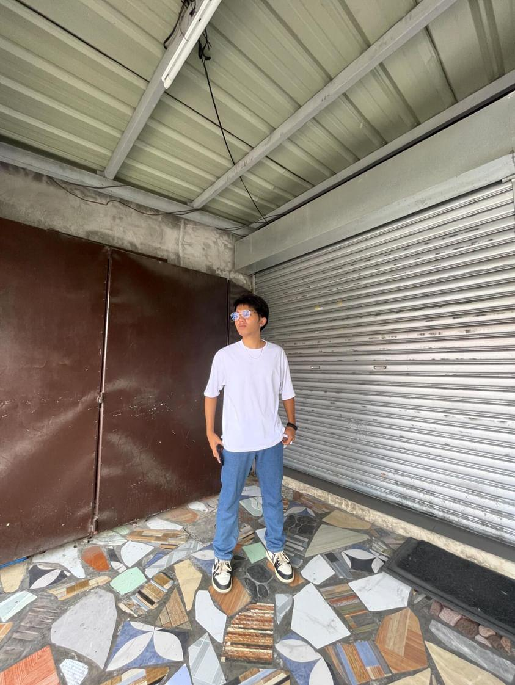

My1stWebpage
My1stWebpage
 CoffeeMenu
CoffeeMenu
 HomePage
My1stWebpage
HomePage
My1stWebpage
 2ndSem.Schedule
MusicAudio
CoffeeMenu
2ndSem.Schedule
MusicAudio
CoffeeMenu
CREATED BY: Jeric Alumbres
Intro
Dito na ako
Alam kung namimiss mo na si ako
Alam ka,Alam ko,Alam ko,Alam ko
(Kitur tignan mo 'to)
Araw-araw miss kita
Araw-araw
Araw-araw ka ipipinta
Araw-araw
Pangakong hindi mag-iisa
Balang araw
Katabi pagmulat ng mata
Gabi-gabi isasayaw kita
Gabi-gabi pag-aalayan ka ng mga kanta na matagal na
Ikaw sakin pinaka maganda
Ikaw ang aking pahinga
VERSE 1
Ikaw ang tanging hiling na pinagkait sa iba
Pinapaalala mo lagi na sa 'kin ka
Ilang beses sumubok at ilang tanong na din
Bakit ba ako padin ang 'yong pinili
Sa kabila ng lahat at hindi isa sa kanila
Sa na paka haba na pila malayong pagitan
Ako'y lumayag ng 'di biro na milya
Hindi sumuko hindi 'to tumigil
Sapagkat sabi ng mga bituin
Sa dulo ikaw ay makikita
Unang hakbang alam ko na agad na wala nang balikan, uh
'Di na kailangan ibilin
Aakyatin alam ko na mahirap ikaw ang aking makiling
Bibigay ko lahat ng akin at titiyaking hindi ka mabibitin
Ako ay sa 'yo tandaan hindi kailangan pang pilitin
Hindi na ako
Pipilitin pa
Sa 'yo lang ako
CHORUS
Araw-araw miss kita
Araw-araw
Araw-araw ka ipipinta
Araw-araw
Pangakong hindi mag iisa
Balang araw katabi pagmulat ng mata
Gabi-gabi isasayaw kita
Gabi-gabi pag-aalayan ka ng mga kanta, na matagal na
Ikaw sakin pinaka maganda
Ikaw ang aking pahinga
VERSE 2
Ikaw lang ang baby 'lang binatbat
Sumusubuok man ang ibang lady
Gusto ko tayo ay extra hindi lamang basic
Pwede bang ipasa mo sakin pics baka may space
Pa ako dyan sa puso mo
Dito na ako
Ngayong sabado kahit may bagyo
Pinto mo ay buksan mo, ooh
Alam kong namimiss mo na si ako
May dala akong paborito mo
Ako
Pwede bang hagkan mo ako
Halikan ang noo
Pagbigyan mo ako at mag kwento sa 'yo
Araw-araw nagmamadali gusto magsabado
Hindi ako mapakali pagmalayo sa iyo, oh
Ngayong sabado
Kahit may bagyo
Pinto mo ay buksan mo
Buksan mo
Alam kung namimiss mo na si ako
May dala akong paborito mo
Ako
Ikaw lang ang baby, lang binatbat
Sumusubuok man ang ibang lady
Gusto ko tayo ay extra hindi lamang basic
Pwede bang ipasa mo sakin pics baka may space pa
Ako dyan sa puso mo, oh